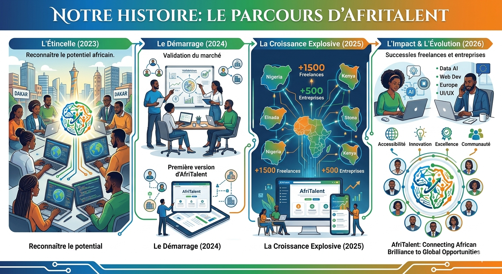

Notre histoire
2023 : L’Étincelle – Reconnaître le potentiel africain Tout a commencé à Dakar. En observant l'écosystème numérique local, une évidence s'est imposée : l'Afrique regorge de talents tech exceptionnels (développeurs, designers, créateurs de contenu) qui ne demandent qu'à exprimer leur potentiel à l'échelle globale. L'idée d'AfriTalent est née de cette volonté de briser les barrières géographiques et de mettre en lumière la brillance de la jeunesse africaine.
2024 : Le Démarrage – La validation du marché L'année 2024 a marqué le lancement de la toute première version de notre plateforme vitrine. Étape par étape, nos équipes ont travaillé pour concevoir une interface simple, fluide et accessible, permettant de valider le besoin réel du marché. Très vite, les premiers freelances ont répondu à l'appel et les premières connexions avec des entreprises locales ont été établies, confirmant la viabilité de notre vision.
2025 : La Croissance Explosive – Une communauté en expansion En 2025, AfriTalent a franchi un cap décisif en s'étendant au-delà de nos frontières initiales pour toucher des hubs technologiques majeurs comme le Nigeria ou le Kenya. La plateforme a connu une croissance exponentielle, rassemblant plus de 1 500 freelances qualifiés et plus de 500 entreprises partenaires. Notre écosystème s'est structuré pour devenir un carrefour incontournable de l'emploi tech sur le continent.
2026 : L’Impact & L’Évolution – Connecter les talents au monde Aujourd'hui, en 2026, AfriTalent n'est plus seulement un projet, c'est un moteur d'opportunités. Nous connectons désormais l'élite de la tech africaine — experts en Data & IA, Web Dev, UI/UX ou DevOps — avec des entreprises du monde entier, notamment en Europe. En nous appuyant sur nos valeurs fortes d'Innovation, d'Accessibilité, d'Excellence et de Communauté, nous continuons d'écrire l'histoire d'un continent qui façonne le futur du numérique.

Nos valeurs
Innovation
Nous innovons constamment pour offrir la meilleure expérience possible.
Accessibilité
La plateforme est accessible partout en Afrique.
Communauté
Nous croyons en la force de la communauté et de l'entraide.
Excellence
Nous visons l'excellence dans tout ce que nous faisons.
Notre équipe


.jpg)
Nos chiffres
+2500
Freelances
+800
Entreprises
+12000
Projets livrés
97%
Clients satisfaits